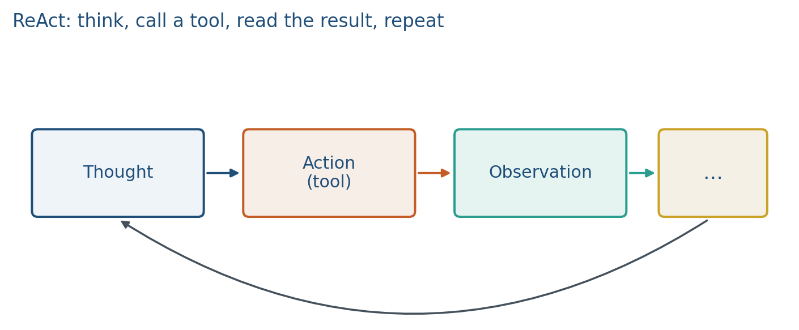

14.2 ReAct and Tool Use
Thought, action, observation. The model calls a tool instead of guessing the lookup.
These notes match the lecture slides. Use (slides) on the course hub for the deck.
ReAct (Yao et al.) interleaves Thought, Action, and Observation. The model is not only writing a chain of thought. It can call a tool, read the result, and then continue.
1. The loop
A thought is scratch work. An action is a structured call: search["library hours"], calc[8+15], lookup[d3]. The environment returns an observation (a string). You append it to the context and sample again until a final answer.

RAG (note 14.1) is one tool: retrieve. A calculator is another. A code runner is another. The control pattern is the same. Lab 14’s calculator is dummy arithmetic so you can implement the loop without an API. The observation must appear in the context; a thought that ignores it is the same bug as unfaithful CoT.
Karpathy’s calculator / interpreter demos are this loop in a product: special tokens, a tool runs, text comes back, the model continues.
2. Why tools change the error modes
CoT can invent a product of two numbers. A calc tool can return the product if the model writes the right call. New failures: malformed actions, calling the wrong tool, ignoring the observation, or looping. That is still unfaithfulness: the thought says “I added” when the observation was never used.
Parse actions strictly (regex or JSON). Cap the number of steps. Log every observation in the report appendix for one worked example. If the parse fails, return an error observation and let the model retry once; do not silently drop the call.
A dummy calc that only matches [0-9+\s*/] (Lab 14) is a feature: eval on free Python is a different threat model. In this class you keep the dummy. A project that opens a code runner must say what is in bounds (arithmetic) and what is not (network, files).
3. ReAct versus ToT
ToT searches among thoughts. ReAct calls the world. You can combine them (search over tool-using traces), but name the knobs separately. For the project, one tool plus a checker is enough; a zoo of APIs is not.
Write the five-line log on the board for every demo: Thought, Action, Observation, Thought, Answer. If a line is missing, you did not run ReAct; you ran CoT with a tool-shaped string.
4. Teaching this note
About 35 minutes at the board, then ~8 minutes of video. Lab 14 can follow in the same two-hour block.
- 0–12 min. Thought / Action / Observation. Parse the action; append the obs.
- 12–22 min. New bugs: bad parse, wrong tool, ignored obs, loops. Cap steps.
- 22–33 min. Worked
17×24withcalc, then Lab 14’s23*60=1380. - Then play Karpathy intro 27:43–35:00 (calculator, interpreter, browser). Pause when a special token launches a tool and an observation returns.
5. Worked example
Question: what is ? Do not multiply in the thought.
- Thought: I need a product; use the calculator.
- Action:
calc[17*24] - Observation:
408 - Thought: Use 408; do not recompute.
- Answer:
If step 4 says “that is 428” while the observation is 408, the loop is unfaithful: the observation was ignored. Final-answer grading might still pass if it boxes 408 from a later copy, or fail on 428. Either way the trace is the bug.
Lab 14’s library minutes: weekday close 23:00, calc[23*60], observation 1380. The answer must contain 1380 from the observation, plus a citation [d1] from retrieval. Two tools, one loop: retrieve is 14.1, calc is this note.
A second board log: 60/12 shuttle loops. Action calc[60/12], observation 5.0, cite [d2].
6. Where students get stuck
- Multiplying in the Thought and using
calcas decoration. Then you did not test the tool. - Swallowing a parse error (
ERR) and answering anyway. - Mixing ToT (search over thoughts) with ReAct (call the world) under one name.
7. Video
Watch Andrej Karpathy, Intro to Large Language Models, 27:43–35:00 (tool use: browser, calculator, interpreter).
Pause on the calculator and on the Python interpreter: emit a call, get an observation, continue. Same URL as 14.1; this note is the control loop, not the cosine index. Stop before multimodality (33:32) if you already used that minute for retrieval; otherwise 33:32–35:00 is optional.
8. Practice
-
Write one Thought–Action–Observation triple that answers “what is 17×24?” with a calculator, without doing the multiply in the thought.
-
The observation is
23:00and the model answersmidnight. What broke? -
Why is an unconstrained
python_evaltool riskier than a dummycalcthat only does+and*on numbers? -
Lab-style: Action
calc[23*60], Observation1380. The Answer says “closes at 1380 o’clock.” Name the bug (hint: units), and write a faithful one-line Answer that still uses1380. -
Four steps, no cap. The model emits
calc[1+1]forever. What two guardrails belong in the loop?